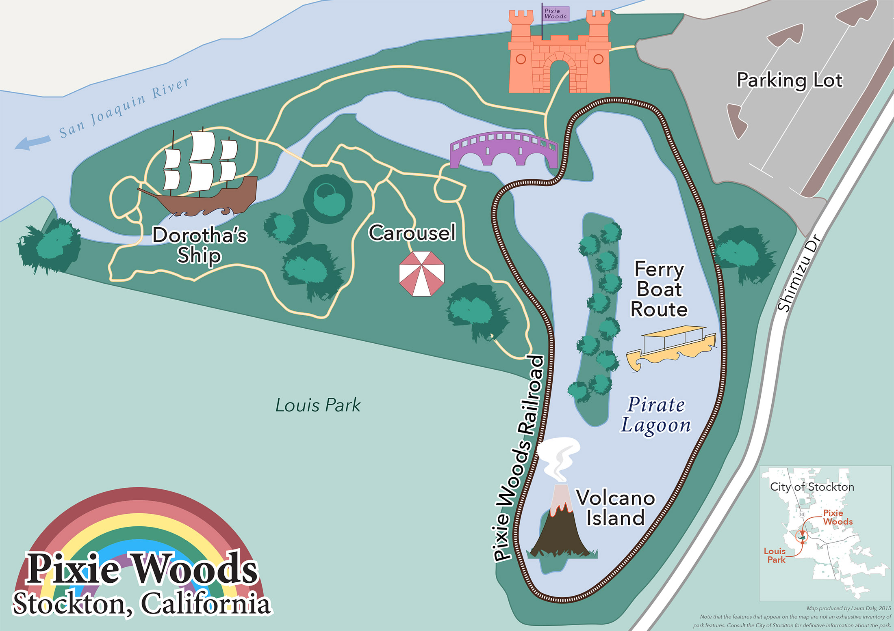
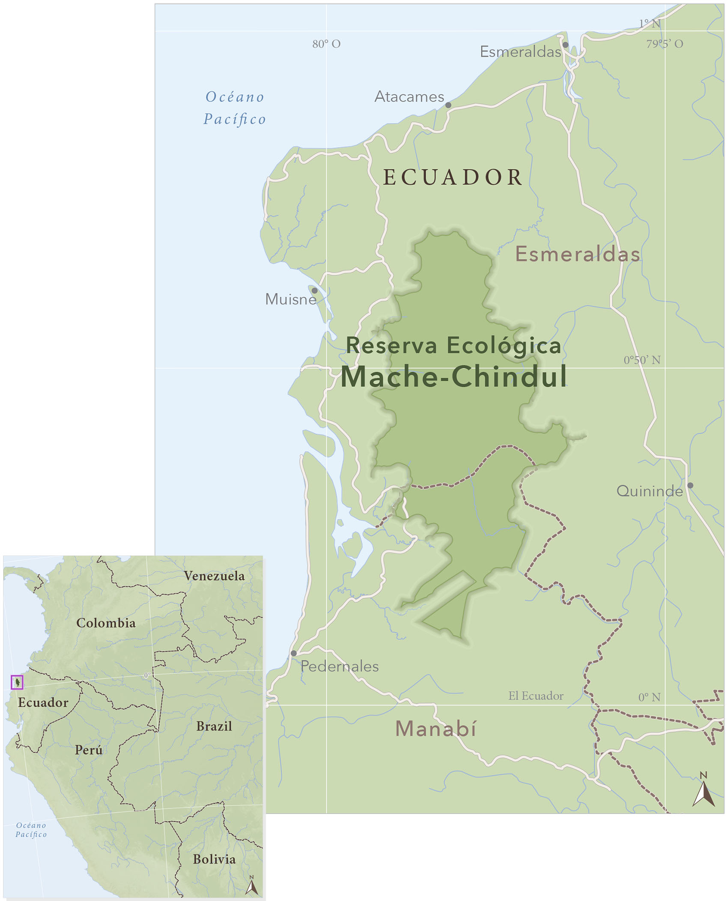
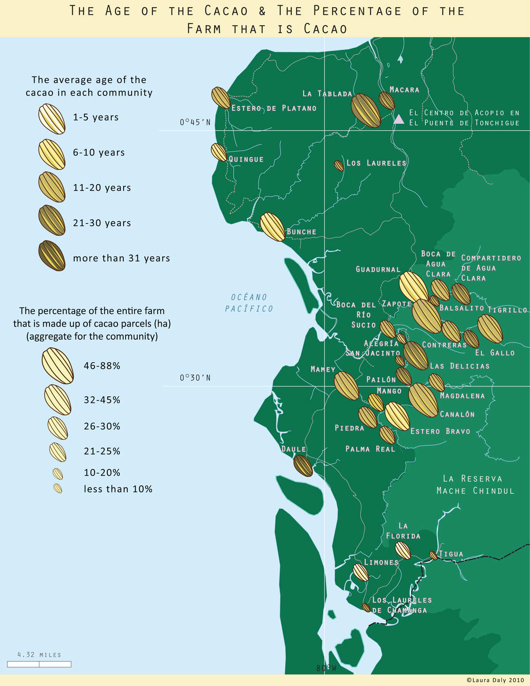
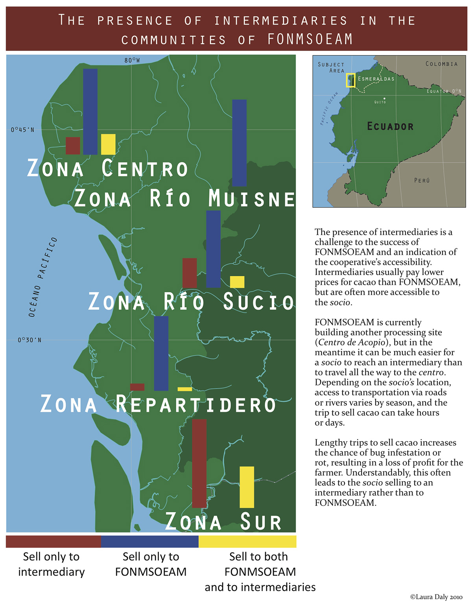

FixWikiMaps is a project devoted to improving the cartographic content on Wikipedia. MapLift was an event that came out of this project, it was concentrated effort to identify Wikipedia articles in need of maps. The folllowing images are my contributions to Wikipedia through the MapLift project.
Pixie Woods is a children's theme park in Stockton, California. My goal was to represent the park in a whimsical, illustrative way that could inspire people to visit as well as provide some information about the fantastical features of the park.
La Reserva ecológica Mache-Chindul is an ecological reserve in the northern coastal area of Ecuador. I wanted to create a map of the reserve for Spanish Wikipedia, so that residents of the reserve can have access to a clean, simple map.
Recreation and trail map designed for the Department of Parks and Recreation in Aspen, Colorado.
Created with GreenInfo Network
FONMSOEAM (Federación de Organización de Negros y Mestizos en el Sur Occidente de Esmeraldas, Atacames, y Muisne) is an agricultural cooperative in Northwestern Ecuador. These maps are part of a series that describes the production of the farmers and their economic decisions.
 